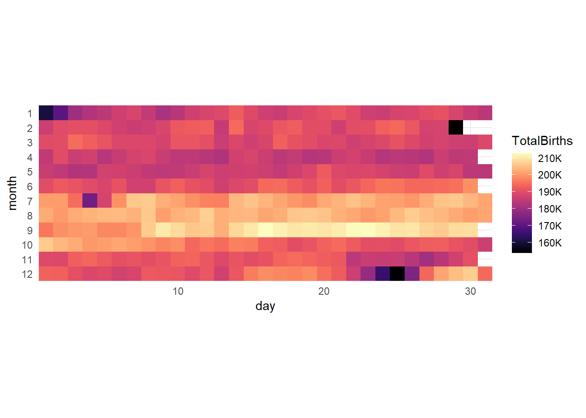
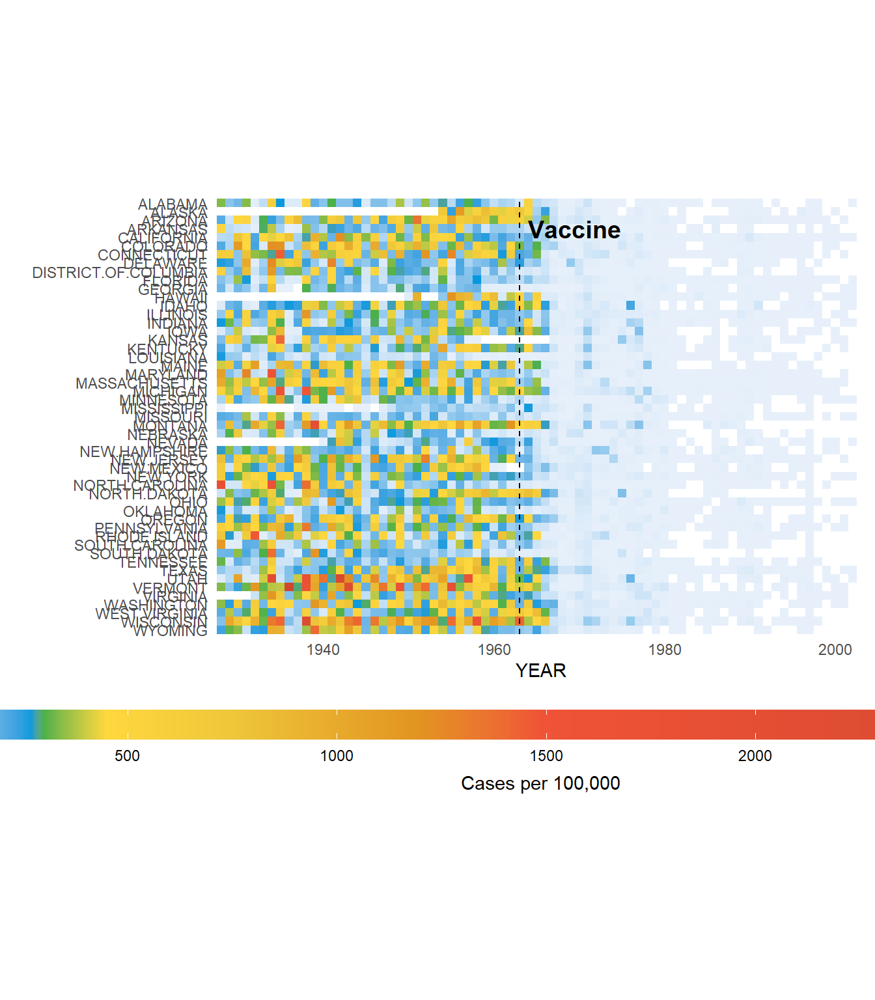

Color
ggplot2 chapter on color theory and adjusting color.
colors()[1:10]## [1] "white" "aliceblue" "antiquewhite" "antiquewhite1"
## [5] "antiquewhite2" "antiquewhite3" "antiquewhite4" "aquamarine"
## [9] "aquamarine1" "aquamarine2"Here is the website where I got the code that created this sample list of colors.

#hcl_palettes()penguins## # A tibble: 333 × 8
## species island bill_length_mm bill_depth_mm flipper_length_mm body_mass_g
## <fct> <fct> <dbl> <dbl> <int> <int>
## 1 Adelie Torgersen 39.1 18.7 181 3750
## 2 Adelie Torgersen 39.5 17.4 186 3800
## 3 Adelie Torgersen 40.3 18 195 3250
## 4 Adelie Torgersen 36.7 19.3 193 3450
## 5 Adelie Torgersen 39.3 20.6 190 3650
## 6 Adelie Torgersen 38.9 17.8 181 3625
## 7 Adelie Torgersen 39.2 19.6 195 4675
## 8 Adelie Torgersen 41.1 17.6 182 3200
## 9 Adelie Torgersen 38.6 21.2 191 3800
## 10 Adelie Torgersen 34.6 21.1 198 4400
## # ℹ 323 more rows
## # ℹ 2 more variables: sex <fct>, year <int>gapminder## # A tibble: 1,704 × 6
## country continent year lifeExp pop gdpPercap
## <fct> <fct> <int> <dbl> <int> <dbl>
## 1 Afghanistan Asia 1952 28.8 8425333 779.
## 2 Afghanistan Asia 1957 30.3 9240934 821.
## 3 Afghanistan Asia 1962 32.0 10267083 853.
## 4 Afghanistan Asia 1967 34.0 11537966 836.
## 5 Afghanistan Asia 1972 36.1 13079460 740.
## 6 Afghanistan Asia 1977 38.4 14880372 786.
## 7 Afghanistan Asia 1982 39.9 12881816 978.
## 8 Afghanistan Asia 1987 40.8 13867957 852.
## 9 Afghanistan Asia 1992 41.7 16317921 649.
## 10 Afghanistan Asia 1997 41.8 22227415 635.
## # ℹ 1,694 more rowsgf_line(lifeExp~year, data = gapminder, fun = "mean", stat = "summary", color = "#b715e5")
gf_point(bill_length_mm~bill_depth_mm, data = penguins, color = "#b715e5")
gf_dens(~bill_length_mm, data = penguins, color = "#b715e5")
bar.color = gf_bar(~species, data = penguins, color = "#b715e5") %>%
gf_labs(title = "color") %>%
gf_refine(scale_x_discrete(guide = guide_axis(n.dodge = 2)))
bar.fill = gf_bar(~species, data = penguins, fill = "#b715e5") %>%
gf_labs(title = "fill") %>%
gf_refine(scale_x_discrete(guide = guide_axis(n.dodge = 2)))
hist.color = gf_histogram(~bill_length_mm, data = penguins, color = "#b715e5") %>%
gf_labs(title = "color")
hist.fill = gf_histogram(~bill_length_mm, data = penguins, fill = "#b715e5") %>%
gf_labs(title = "fill")
box.color = gf_boxplot(bill_length_mm~species, data = penguins, color = "#b715e5") %>%
gf_labs(title = "color") %>%
gf_refine(scale_x_discrete(guide = guide_axis(n.dodge = 2)))
box.fill = gf_boxplot(bill_length_mm~species, data = penguins, fill = "#b715e5") %>%
gf_labs(title = "fill") %>%
gf_refine(scale_x_discrete(guide = guide_axis(n.dodge = 2)))
dens.color = gf_density(~bill_length_mm, data = penguins, color = "#b715e5") %>%
gf_labs(title = "color")
dens.fill = gf_density(~bill_length_mm, data = penguins, fill = "#b715e5") %>%
gf_labs(title = "fill")
grid.arrange(bar.color, bar.fill, hist.color, hist.fill, box.color, box.fill, dens.color, dens.fill, nrow = 2)
library(withr)
pin = read.csv("https://raw.githubusercontent.com/danielmiessler/SecLists/refs/heads/master/Passwords/Common-Credentials/four-digit-pin-codes-sorted-by-frequency-withcount.csv", header = FALSE) %>%
rename(Pin = V1, Count = V2)
pin$Pin =
with_options(
c(scipen = 999),
str_pad(pin$Pin, 4, pad = "0")
)
pin = pin %>%
mutate(First = str_sub(Pin, 1, 2),
Second = str_sub(Pin, 3, 4))
gf_tile(as.numeric(First)~as.numeric(Second), data = pin, fill=~Count) %>%
gf_refine(coord_fixed(),
scale_x_continuous(expand = expansion(add=0)),
scale_y_continuous(expand = expansion(add = 0)),
scale_fill_viridis(option = "G")) %>%
gf_labs(y = "First 2 Digits", x = "Second 2 Digits")
BirthdaysSum = Birthdays %>%
group_by(month, day) %>%
mutate(TotalBirths = sum(births)) %>%
dplyr::select(month, day, TotalBirths) %>%
unique()gf_tile(month~day, data = subset(BirthdaysSum, TotalBirths > 300), fill=~TotalBirths) %>%
gf_refine(scale_fill_viridis(na.value = NA,
option = "magma",
labels = label_number(scale_cut = cut_short_scale())),
coord_fixed(expand = FALSE),
scale_y_reverse(breaks = c(seq(1:12))))
max = max(~TotalBirths, data = BirthdaysSum)
min = min(~TotalBirths, data = subset(BirthdaysSum, TotalBirths > 50000))
gf_tile(month~day, data = subset(BirthdaysSum, TotalBirths > 300), fill=~TotalBirths) %>%
gf_refine(scale_fill_viridis(na.value = NA,
option = "magma",
labels = label_number(scale_cut = cut_short_scale()),
limits = c(min,max)),
coord_fixed(expand = FALSE),
scale_y_reverse(breaks = c(seq(1:12)))) %>%
gf_tile(2~29, fill="black")## Warning: All aesthetics have length 1, but the data has 366 rows.
## ℹ Please consider using `annotate()` or provide this layer with data containing
## a single row.
gf_tile(month~day, data = BirthdaysSum, fill=~TotalBirths) %>%
gf_refine(scale_fill_gradientn(na.value = "white", labels = label_number(scale_cut = cut_short_scale()),
colors = c("black", "#721f81", "#f1605d", "#fcfdbf"),
values = c(0.1, 0.8, 0.9, 1)),
coord_fixed(expand = FALSE),
scale_y_reverse(breaks = c(seq(1:12)))) gf_tile(month~day, data = BirthdaysSum, fill=~TotalBirths) %>%
gf_refine(scale_fill_gradientn(na.value = "white", labels = label_number(scale_cut = cut_short_scale()),
colors = viridis(4, option = "magma"),
values = c(0.1, 0.8, 0.9, 1)),
coord_fixed(expand = FALSE),
scale_y_reverse(breaks = c(seq(1:12)))) 
gf_tile(month~day, data = BirthdaysSum, fill=~TotalBirths) %>%
gf_refine(scale_fill_gradientn(na.value = "white", labels = label_number(scale_cut = cut_short_scale()),
colors = viridis(4, option = "magma"),
values = c(0.1, min/max, (min+max)/max, 1)),
coord_fixed(expand = FALSE),
scale_y_reverse(breaks = c(seq(1:12)))) 
Viridis palette generator https://waldyrious.net/viridis-palette-generator/
gf_tile(fct_reorder(city, avg_temp)~month, data = Weather, fill=~avg_temp, height = 1, width = 1) %>%
gf_refine(scale_fill_viridis(),
coord_fixed(expand = FALSE))
temps_months <- read_csv("https://wilkelab.org/SDS375/datasets/tempnormals.csv") %>%
group_by(location, month_name) %>%
summarize(mean = mean(temperature)) %>%
mutate(
month = factor(
month_name,
levels = c("Jan", "Feb", "Mar", "Apr", "May", "Jun",
"Jul", "Aug", "Sep", "Oct", "Nov", "Dec")
),
location = factor(
location, levels = c("Death Valley", "Houston", "San Diego", "Chicago")
)
) %>%
dplyr::select(-month_name)## Rows: 1464 Columns: 8
## ── Column specification ────────────────────────────────────────────────────────
## Delimiter: ","
## chr (4): location, station_id, month_name, month
## dbl (3): temperature, day, day_of_year
## date (1): date
##
## ℹ Use `spec()` to retrieve the full column specification for this data.
## ℹ Specify the column types or set `show_col_types = FALSE` to quiet this message.
## `summarise()` has grouped output by 'location'. You can override using the `.groups` argument.gf_tile(location~month, data = temps_months, fill=~mean) %>%
gf_refine(coord_fixed())
gf_tile(location~month, data = temps_months, fill=~mean) %>%
gf_refine(coord_fixed(),
scale_fill_gradient2(low = "darkcyan", high = "darkred", mid = "yellow",
midpoint = (min(~mean, data = temps_months) + max(~mean, data = temps_months))/2))  https://towardsdatascience.com/heatmaps-for-time-series/
https://towardsdatascience.com/heatmaps-for-time-series/
https://graphics.wsj.com/infectious-diseases-and-vaccines/
measles = read.csv("https://gist.githubusercontent.com/rlvaugh/fd6ce822c98e38849d3ec51e3fd3441d/raw/5d896ec8b962aafb3b3194d63e336847e49749a5/measles_tycho.csv") %>%
mutate_at(1:53, as.numeric) %>%
pivot_longer(cols = 3:53, names_to = "State", values_to = "Cases") %>%
group_by(YEAR, State) %>%
summarise(Count = ifelse(all(is.na(Cases)), NA, sum(Cases, na.rm = TRUE)))## Warning: There were 51 warnings in `mutate()`.
## The first warning was:
## ℹ In argument: `ALABAMA = .Primitive("as.double")(ALABAMA)`.
## Caused by warning:
## ! NAs introduced by coercion
## ℹ Run `dplyr::last_dplyr_warnings()` to see the 50 remaining warnings.## `summarise()` has grouped output by 'YEAR'. You can override using the
## `.groups` argument.colors = c('#e7f0fa', # lightest blue
'#c9e2f6', # light blue
'#95cbee', # blue
'#0099dc', # dark blue
'#4ab04a', # green
'#ffd73e', # yellow
'#eec73a', # yellow brown
'#e29421', # dark tan
'#f05336', # orange
'#ce472e') # red
positions = c(0, 0.02, 0.03, 0.09, 0.1, 0.15, 0.25, 0.4, 0.5, 1)
gf_tile(State~YEAR, data = measles, fill = ~Count) %>%
gf_vline(xintercept = 1963, color = "black", linetype = "dashed") %>%
gf_refine(coord_fixed(expand = FALSE),
scale_y_discrete(limits = rev),
scale_fill_gradientn(na.value = "white",
colors = colors,
values = positions,
guide = guide_colorbar(barwidth = 50),
breaks = seq(from = 0, to= 3000, by=500))) %>%
gf_theme(legend.position = "bottom", legend.title.position = "bottom",
legend.title = element_text(hjust = 0.5)) %>%
gf_labs(y = "", fill="Cases per 100,000") +
annotate(geom = "text", y = 48, x = 1964, label = "Vaccine", hjust = 0, fontface = "bold", size = 5)
gf_tile(State~YEAR, data = measles, fill = ~Count) %>%
gf_vline(xintercept = 1963, color = "black", linetype = "dashed") %>%
gf_refine(coord_fixed(expand = FALSE),
scale_y_discrete(limits = rev),
scale_fill_gradientn(na.value = "white",
colors = colors,
values = positions,
breaks = seq(from = 0, to= 3000, by=500))) %>%
gf_theme(legend.position = "bottom", legend.title.position = "bottom",
legend.title = element_text(hjust = 0.5), legend.key.width = unit(1, "null")) %>%
gf_labs(y = "", fill="Cases per 100,000") +
annotate(geom = "text", y = 48, x = 1964, label = "Vaccine", hjust = 0, fontface = "bold", size = 5)https://www.tidyverse.org/blog/2024/02/ggplot2-3-5-0-legends/
x = seq(from = 0, to = 8*pi, by = 0.1)
gf_line(sin(x)~x) %>%
gf_line(2*sin(x)~x, color = "purple", size = 2) %>%
gf_line(sin(x/2)~x, color = "orange", size = 1, linetype = "dashed") ## Warning: Using `size` aesthetic for lines was deprecated in ggplot2 3.4.0.
## ℹ Please use `linewidth` instead.
## This warning is displayed once every 8 hours.
## Call `lifecycle::last_lifecycle_warnings()` to see where this warning was
## generated.
require(HSAUR)## Loading required package: HSAUR## Warning: package 'HSAUR' was built under R version 4.4.3## Loading required package: tools##
## Attaching package: 'tools'## The following object is masked from 'package:withr':
##
## makevars_userdata("Forbes2000")
gf_boxplot(rank~category, data = subset(Forbes2000, category %in% c("Insurance", "Trading companies", "Food markets")))
favstats(rank~fct_reorder(category, rank), data = Forbes2000)## fct_reorder(category, rank) min Q1 median Q3 max mean
## 1 Food markets 88 380.00 646.0 1656.00 1970 961.2727
## 2 Aerospace & defense 107 262.00 648.0 975.00 1959 713.0526
## 3 Oil & gas operations 4 296.25 664.5 1238.00 1969 774.3889
## 4 Telecommunications services 26 304.50 677.0 1213.50 1994 793.3433
## 5 Utilities 65 422.25 716.5 1242.50 1992 857.7273
## 6 Insurance 3 398.25 778.0 1222.00 1930 821.7321
## 7 Drugs & biotechnology 24 165.00 792.0 1431.00 1753 824.4444
## 8 Consumer durables 8 437.50 794.5 1330.00 1989 879.3514
## 9 Conglomerates 2 295.00 807.0 1216.00 1731 794.6774
## 10 Household & personal products 44 528.75 884.0 1313.50 1856 901.5909
## 11 Food drink & tobacco 22 457.50 886.0 1452.50 1977 966.3976
## 12 Capital goods 134 635.00 972.0 1508.00 1999 1073.7358
## 13 Chemicals 97 548.50 982.5 1369.50 1878 952.1000
## 14 Software & services 31 818.50 1008.0 1462.50 1921 1052.4516
## 15 Media 42 622.00 1009.0 1438.00 1993 1019.8197
## 16 Hotels restaurants & leisure 140 693.00 1020.0 1478.00 1956 1052.0270
## 17 Transportation 69 654.50 1067.5 1456.75 1973 1054.5500
## 18 Health care equipment & services 145 721.00 1080.0 1475.00 1939 1040.6769
## 19 Diversified financials 9 668.25 1081.5 1531.75 1990 1064.8228
## 20 Banking 1 454.00 1107.0 1663.00 2000 1070.2716
## 21 Retailing 10 505.25 1124.5 1510.25 1962 1040.7273
## 22 Semiconductors 45 802.75 1151.0 1365.00 1935 1056.4231
## 23 Construction 142 796.00 1188.0 1589.50 1995 1183.1013
## 24 Materials 122 745.00 1203.0 1562.00 1998 1162.2990
## 25 Technology hardware & equipment 16 679.00 1253.0 1528.00 1968 1103.8475
## 26 Business services & supplies 138 762.00 1326.0 1698.00 1997 1216.7857
## 27 Trading companies 156 865.00 1372.0 1629.00 1980 1229.2000
## sd n missing
## 1 656.7786 33 0
## 2 516.8609 19 0
## 3 556.0906 90 0
## 4 592.2966 67 0
## 5 576.1249 110 0
## 6 511.1019 112 0
## 7 614.1001 45 0
## 8 592.3701 74 0
## 9 537.5745 31 0
## 10 470.7155 44 0
## 11 592.1994 83 0
## 12 534.2511 53 0
## 13 505.3046 50 0
## 14 524.4405 31 0
## 15 564.7309 61 0
## 16 514.4058 37 0
## 17 526.6410 80 0
## 18 502.4967 65 0
## 19 550.6105 158 0
## 20 645.4480 313 0
## 21 565.6818 88 0
## 22 528.4399 26 0
## 23 509.9666 79 0
## 24 544.5232 97 0
## 25 555.3248 59 0
## 26 538.3014 70 0
## 27 602.1558 25 0